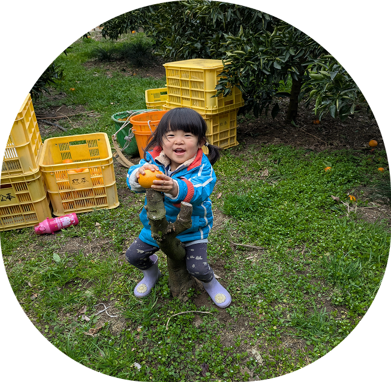
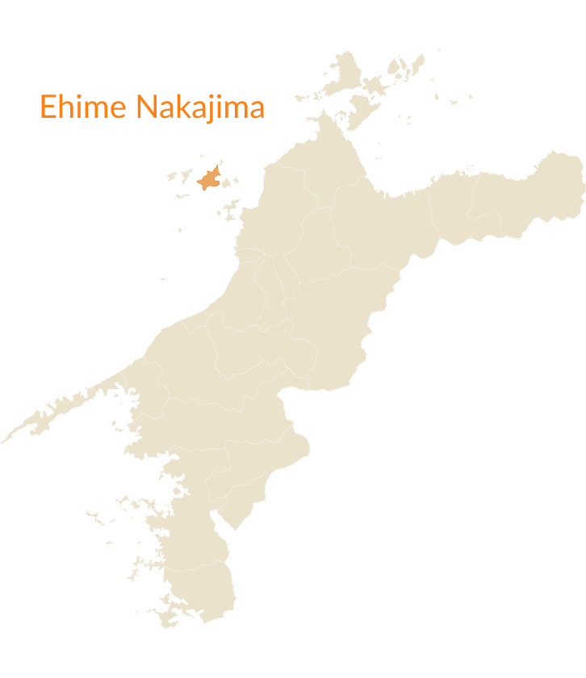
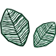
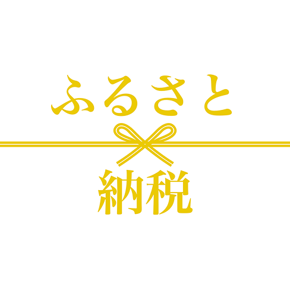
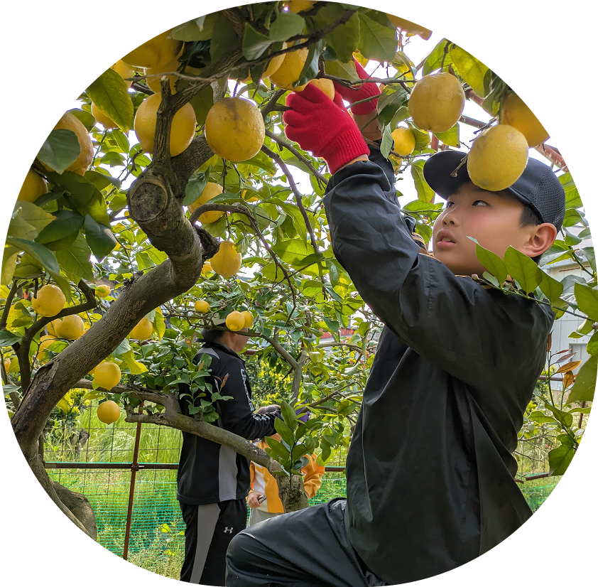
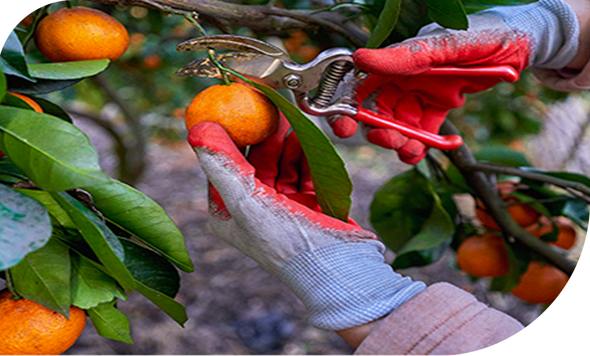
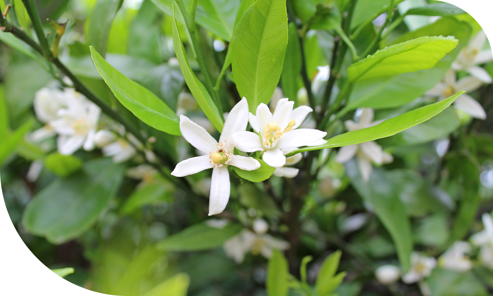
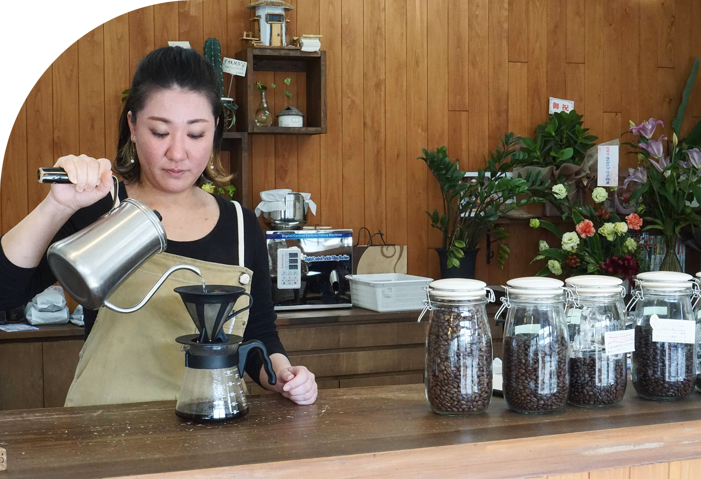
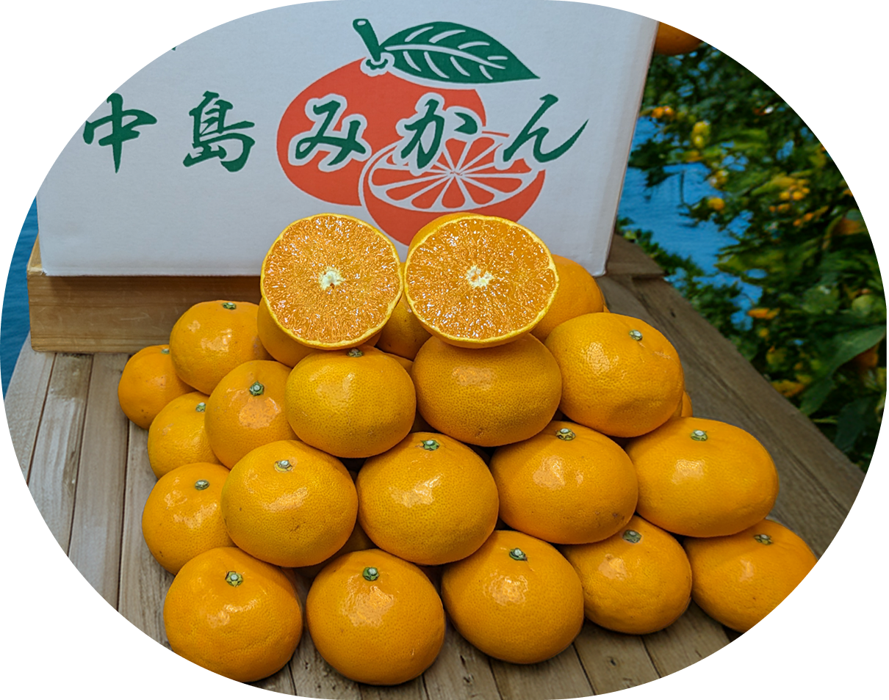

愛媛県中島
松山市からフェリーで約1時間、豊かな自然に囲まれた瀬戸内海の離島です。 全国でも有数のみかんの産地として知られ、海から吹く潮風が畑にミネラルを運び、温暖な気候と相まって、甘くて濃厚なみかんを育てています。 かつて15,000人以上が暮らしていたこの島も、いまでは人口が約3,000人と5分の1にまで減少。 過疎化が進むなかでも、この地で代々みかん作りを続けてきたのが、私たち松本農園です。

2025年冬～2026年春収穫分先行予約受付が始まりました!

About us


愛媛県中島
松山市からフェリーで約1時間、豊かな自然に囲まれた瀬戸内海の離島です。 全国でも有数のみかんの産地として知られ、海から吹く潮風が畑にミネラルを運び、温暖な気候と相まって、甘くて濃厚なみかんを育てています。 かつて15,000人以上が暮らしていたこの島も、いまでは人口が約3,000人と5分の1にまで減少。 過疎化が進むなかでも、この地で代々みかん作りを続けてきたのが、私たち松本農園です。

こたつにある美味しいみかん
冬のぬくもりといえば、やっぱり「こたつとみかん」。 昔ながらの、でもどこか新しい、そんな心温まる時間がそこにあります。 松本農園は、100年以上続くみかん農家。 父から娘へと受け継がれ、今は姉妹ふたりで力を合わせて、みかんづくりに取り組んでいます。 私たちが届けたいのは、「気軽に買える、美味しいみかん」。 自然の恵みと家族の絆に育まれた「樹上完熟みかん」は、まさに冬のこたつ時間にぴったりです。

What We Care About

樹上完熟とは、みかんを木になったまま完熟させてから収穫する方法です。
一般的なみかんは、市場への出荷を考えて少し早めに収穫されますが、樹上完熟みかんは太陽の光をたっぷり浴び、樹の上でじっくりと甘さを蓄えます。
その結果、糖度が高く、酸味とのバランスが絶妙な、濃厚な味わいのみかんが生まれます。
私たちの園では、できる限り人工的な灌水を行わず、自然の降雨だけを頼りに栽培しています。 自然の水分だけで育つみかんは、必要な水を根からしっかり吸収しようと、地中深くまで根を張るようになります。 その結果、土壌中のミネラル分や栄養をたっぷりと取り込み、味に深みとコクが生まれます。 また、水を絞って育てることで、果実の糖度が高まり、ぎゅっと凝縮された甘みと酸味のバランスが絶妙なみかんに仕上がります。 余分な水分がない分、果肉もしっかりとしていて、食べ応えがあります。

Mikan Moments

松本農園のみかんは、松山市にある「風早珈琲焙煎所BOWEN」の店頭でも販売しています。
店内にはみかんのほか、自家焙煎の香り高いコーヒー豆や、心のこもったハンドメイドの小物を取り扱っています。店内には、どこかほっとするようなあたたかい空気が流れています。
コーヒーの香りに包まれながら、自然の力で育ったみかんを手にとってみませんか？
季節の味わいを、ぜひお店で感じてみてください。

コーヒー豆焙煎のご予約もどうぞ
Online Shop
姉妹で作った、島のちょっと特別なみかん。
「おいしい」をお届けするオンラインストアです。
潮風と太陽の光が降り注ぐ、瀬戸内の小さな島で、ひとつひとつ大切に育てました。 松本農園から直送させていただきます。

Contact
松本農園へのお問い合わせはこちらからお気軽にご連絡ください。
収穫時期等ご返信まで2～3日お時間を頂く場合がございます。ご了承くださいませ。
コーヒー豆も販売しています！